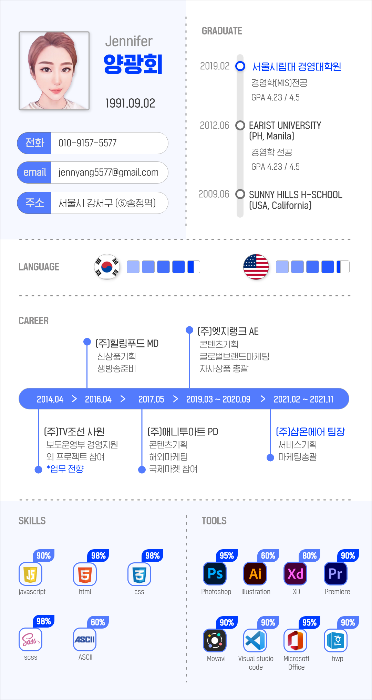
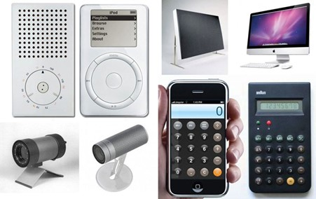
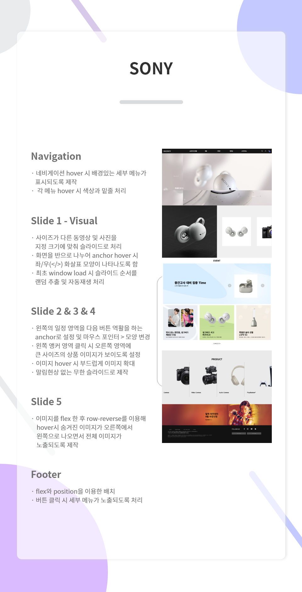
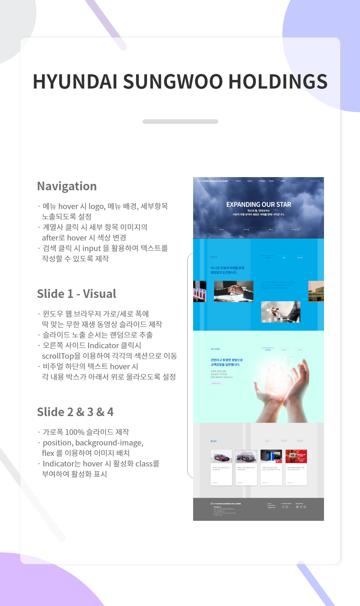
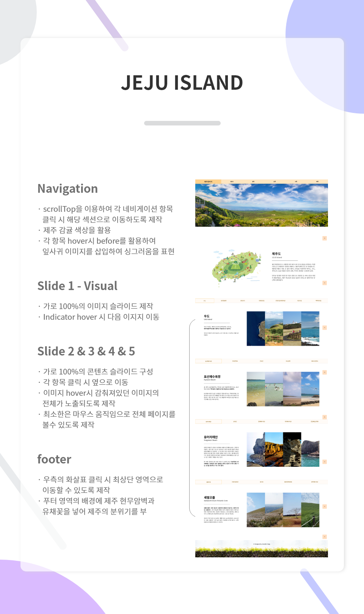

- Name : 양광회
- Birth : 1991.09.02
- Address : 서울시 강서구 공항동 (송정역)
- Phone : 010-9157-5577
- Email : jennyang5577@gmail.com
로딩중
JENNIFER YANG
CREATIVE PUBLISHER
새로운 도전과 공부를 끈임없이하는 웹퍼블리셔 양광회 입니다.
기분 좋은 사용자 경험을 전달 할수 있는 효율적인 시멘틱 웹사이트 구축 및 디자인으로
처음과 끝을 책임지겠습니다.
스크롤바를 내리면 작품을 감상할 수 있습니다.
ABOUT ME
VISION
고객과 나의 팀원들이 믿고 일을 맡길 수 있는 웹퍼블리셔가 되고싶습니다.
합리적인 HTML과 CSS 그리고 Javascript를 설계하고 제품의 사용성에 맞는 효율적인 디자인을 구현하는 능력자가 되는것이 목표입니다.
새롭게 웹디자인 분야로 도전한 이유는 특별한 경험을 통해 갖게되었습니다.
이전 직장에서 업무가 마케팅 총괄에서 서비스기획으로 확장되면서 PPT 이상의 새로움에 큰 흥미를 갖게 되었습니다.
콘텐츠 한 장을 넘어 웹 화면 전체를 통해 사용자와 소통하는 방법에 큰 도전을 느꼈으며,
웹 디자인이 향후 미래 산업의 주측이 될 것이라는 확신이 생겨 이 일을 꼭 해야겠다는 결심을 하게되었습니다.
목표를 이루기 위해 끊임없이 공부하고 탐구하며 창의적으로 사용자를 끌어당기는 웹 퍼블리셔가 되겠습니다.
WHAT CAN I DO?
내부적으로는 '어떤 사람이 와도 유지보수가 쉬운' 코드 구조 설계가 목표이며
외부적으로는 '4살 어린이도 고민 없이 사용할 수 있는 디자인'을 만들겠다는 목표를 가지고 지속적으로 공부하고 있습니다.
마케팅 경력을 통해 쌓은 클라이언트와 원활한 소통과 이를 적극적으로 반영할 수 있는 UI/UX 디자인 능력은 저의 최고의 장점 중 하나입니다.
HTML5 & CSS3 시멘틱 페이지를 ZenCoding(EMMET), SCSS로 코딩할 수 있습니다.
JS 플러그인을 사용에 그치지 않고 필요한 기능을 직접 구현할 수 있는 Javascript/jQuery 로직구현이 가능합니다.
새로운 코딩기법과 다양한 디자인 레퍼런스 속에서 적합한 디자인을 찾고 효율적으로 적용하는 배움이 정말 즐겁습니다.
- ZenCoding(EMMET) & SCSS
- Javascript & jQuery 로직구현
- MVC 패턴의 페이지 구성
- 반응형 웹디자인
- HTML5 DTD 유효성 검사 통과
- 웹접근성을 향상시킨 시멘틱 페이지
WORK STYLE
- 구조와 디자인, 기능을 분리한 MVC패턴을 구현
- 자바스크립트와 jQuery를 구현
- HTML5 시멘틱과 CSS3 웹페이지를 구현
다른 사람이 말하는 나
-
다혜
엄청 똑똑한 긍정의 여신리더 타이틀이 너무나도 잘 매치되는 리더쉽있는 분, 여느 리더들 처럼 필요한 루트나 일정, 공지 같은 내용 정리를 굉장히 잘해주셔서 수업에 있어 많은 도움을 주는 만능 헬퍼! 적절한 타이밍에 먼저 나서서 겸손을 비추며 으쌰으쌰 정신으로 끈기와 희망을 북돋아주는 더 함께하고 싶은 나이스 리더
-
선이
만물박사 최고의 해결사배움에 열정이 많고 리더십이 있어 사람을 모아 같이 나누는 사람. 쌤과 학생들이 뭔가 제시했을때 피드백이 빨라 같이 작업하기 좋음.
-
로운
예쁜데 실력까지 갖춘 사기캐먼저 스터디를 열어 함께 학습할 기회를 열어주고 도움을 주는데 열정적인 사람. 항상 배우는 데에 적극적이고 자신의 소신을 지켜 결단력있는 실행력을 보여줍니다.
SKILL
탁월한 UX분석능력과 Emmet/Zencoding 활용
-
UX/UI 디자인
사용자의 Context와 Needs를 파악하고
Problem을 해결할 수 있는 Insight 도출 -
반응형 웹표준
시멘틱을 지향하는 HTML/CSS 작성능력 보유,
자바스크립트와 제이쿼리 기반의 로직 구현 가능
SASS 전처리기와 리액트 라이브러리 활용
-
Sass Preprocessor
협업 웹코딩의 필수 기술인 SCSS를 이용한
CSS 스타일링을 원활이 사용할 수 있습니다. -
반응형 웹표준
국내 프론트엔드 시장의 대세 리액트 코드구현,
자바스크립트와 제이쿼리 기반의 로직구현 가능
ABILITY
젠코딩
HTML5
CSS
jQuery
웹기획
디자인
95%
리더쉽
적극성
창조성
사교성
책임감
정직성
온라인 이력서
'화면으로 고객과 대화한다'는 생각과 집념으로
매일 노력하고 있습니다.
HTML5 & CSS3 시멘틱 페이지를 ZenCoding(EMMET)으로 코딩할 수 있습니다.
클라이언트의 요구사항을 적극적으로 반영하는 UI/UX 디자인 능력은 저의 최고의
장점중 하나입니다.
JS 플러그인을 사용에 그치지 않고 필요한 기능을 직접 구현할 수 있는 Javascript/jQuery 로직구현이 가능합니다.
새로운 코딩기법과 디자인을 배우는 것이 정말 즐겁습니다.

UX DESIGN
작품리스트
이전 다음내가 생각하는 사용자경험 - User Experience
성공적인 UX라 불리는 사례들을 보면서
사용자 경험을 바탕으로 어떤 제품이나 서비스를 구축하는 것이 중요함을 깨달았습니다.
제가 생각하는 UX란, 사용자가 서비스를 이용함에 있어 어떠한 불편함과 특별한 장애 없이
명쾌하고 편리한 서비스를 이용하도록 하여 제공된 서비스에 대한 좋은
경험과 필요성을 느끼게하는 것입니다.
따라서 UI역시 사용자와 목적에 밀접하게 부합하도록 설계해야한다고 생각합니다.
상품의 사용자와 그의 목적성을 분명히 알고 분명한 강조, 눈이 편안한 색감
등의 가시적 디자인으로
사용자의 사용 흐름을 리드해야하며 이를 뒷받침 해주는 기능과 실행이 구현되어야 한다고 생각합니다.
일상속의 UX를 고려한 상품

디자인과 UX의 차이
- 1. 우유박스
-
우유박스가 다양한 가구상품 등으로
업사이클링(Upcycling)한 사례
- 2. 페트(PET)병
-
페트병이 분무개, 비눗방울 장난감
샴푸 통 등으로 활용된 사례
PORTFOLIO
소니 홈페이지
SONY(Clone Website)
소니 홈페이지의 레이아웃과 슬라이드 등의 기능을 똑같이 구현했습니다.
소니 홈페이지에 사용된 이미지를 그대로 사용하였으며
일부 슬라이드에 이전/다음 버튼을 추가하여 사용성을 높였습니다.
작업프로그램 : Visual Studio Code
100% 개인 작업


현대성우 홀딩스
Hyundai SungWoo(Clone Website)
웹 브라우저 크기에 딱 맞는 동영상 슬라이드 및
콘텐츠 슬라이드를 똑같이 구현했습니다.
홈페이지에 사용된 이미지 및 색상을 그대로 사용하였습니다.
작업프로그램 : Visual Studio Code
100% 개인 작업


추천여행지
Trip to Jeju Island
제주도를 동/서/남/북 방향으로 나누어
각 여행지에 대한 정보와 사진을 통해 소개했습니다.
제주도 감귤의 색상을 키컬러로 꾸며 한층 더 제주도 느낌을 주었습니다.
작업프로그램 : XD, Visual Studio Code
100% 개인 작업


필요한 기능을 직접 javascript/jquery 로직 구현
‘스타일을 창조하여 그것을 섬세한 디자인으로 탈바꿈 시키고싶다’ 는 마음으로 매일 노력하고 있습니다.
HTML5 & CSS3 시멘틱 페이지를 SCSS, ZenCoding(EMMET)으로 작성할 수 있습니다.
클라이언트의 요구사항을 적극적으로 반영하는 UI/UX 디자인 능력은 저의 최고의 장점중 하나입니다.
JS 플러그인을 사용에 그치지 않고 필요한 기능을 직접 구현할 수 있는 Javascript/jQuery 로직구현이 가능합니다.
새로운 코딩기법과 디자인을 배우는 것이 정말 즐겁습니다.
for문과 다중 if문의 결합한 로직 구현
SASS, Emmet 활용
페이지 전체의 계층구조를 입체적으로 분석할 수 있는
실무형 코딩기법 Emmet을 사용할 수 있어 업무시간을 단축시킬 수 있을뿐 아니라,
유지보수도 더욱 쉽고 정확하게 처리할 수 있습니다.
SCSS의 가장 큰 장점인 변수와 Mixin 기능을 적극 활용하여
CSS 스타일링을 할 수 있습니다.
Sprite-Image와 IR(Image Replacement)기법에 능숙
id, class를 남발하지 않고 원하는 요소를 셀렉팅할 수 있는 능력,
CSS3 Transform, Transition, Keyframes을 이용한 애니메이션 효과 구현
직접 구현한 슬라이드
CONTACT
귀사에 입사를 지원합니다.
저의 웹퍼블리싱 이야기 입니다.
질문을 선택하시면 저의 답변을 보실수 있습니다.
- 1. html5의 가장 큰 특징에 대해서 설명해보겠습니다! 화살표
-
1. HTML5는 기존 HTML과의 호완성을 보장 하기 때문에 기존의 소스를 크게 바꾸지 않아도 됩니다. 모든 디바이스에서 웹페이지가 호환됩니다.
2. 별도의 플러그인 없이도 멀티미디어를 실행할 수 있습니다. 그 외 그래픽 효과 등도 연출할 수 있습니다.
3. 시멘틱 웹 기술을 지원합니다. - 2. 웹표준, 웹접근성, 시멘틱웹에 대해 설명해보겠습니다! 화살표
-
1. 웹표준은 W3C(웹표준화 단체)가 권고한 표준안을 뜻하며 용도와 의미에 맞는 태그 사용 및 CSS를 구조와 표현적으로 분리하여 작업하는 것을 의미합니다.
2. 웹 접근성은 사람의 신체 조건과 상관 없이 모든 환경에서 웹 콘텐츠를 이용할 수 있어야 하는 것을 의미합니다. 시각 장애를 가진 사용자가 웹에 접근할때 보조기기를 이용해 html 문서에 포함된 콘텐츠의 논리적인 순서와 요소의 의미 및 이미지가 포함하고 있는 정보를 바탕으로 정보를 취득하기 때문입니다. 이 외에도 검색엔진에 노출될 수 있도록 시멘틱 웹과 웹 접근성을 고려하여 문서를 작성해야합니다.
3.시맨틱 웹은 태그 자체가 가지고 있는 의미에 맞게 HTML 문서를 작성하여 브라우저, 혹은 컴퓨터가 이해할 수 있는 문서를 작성하는 것을 말합니다. - 3. 자바스크립트 라이브러리 사용시 가장 큰 장점을 설명해보겠습니다! 화살표
-
1. jQuery는 주요 웹 브라우저의 구버전을 포함한 대부분의 브라우저에서 지원됩니다.
2. HTML DOM을 손쉽게 조작할 수 있으며, CSS 스타일도 간단히 적용할 수 있습니다.
3. 애니메이션 효과나 대화형 처리를 간단하게 적용해 줍니다.
4. 같은 동작을 하는 프로그램을 더욱 짧은 코드로 구현할 수 있습니다.
5. 다양한 플러그인과 참고할 수 있는 문서가 많이 존재합니다.
6. 오픈 라이선스를 적용하여 누구나 자유롭게 사용할 수 있습니다. - 4. .setInterval() 함수에 대해 설명해보겠습니다! 화살표
-
setInterval() 은 일정시간 마다 함수가 반복적으로 실행되도록 처리하는 역활을 합니다.
setTimeout() 은일정한 시간 후에 작업을 한번 실행하는 매서드입니다. 보통 재귀적 호출을 사용하여 작업을 반복합니다.
clearInterval(), clearTimeout() 은 setInterval() 로 설정한 작업을 모두 실행하고 다음 작업을 취소하는 역활을 합니다. - 5. CSS 미디어쿼리는 어떤 역할을 수행하는지 설명해보겠습니다! 화살표
-
미디어쿼리 는 CSS의 문법 중 하나이며, 반응형 디자인을 작성한 조건에 따라 선택자마다 설정해주는 역활을합니다. 조건의 유형은 단말기의 유형(화면크기) 또는 수치(해상도, 뷰포트 넓이) 등이 있습니다.
추가로 궁금하신 점은 면접시 말씀드리겠습니다. 감사합니다~!
본 페이지는 저의 개인 포트폴리오용으로 제작되었으며, 상업적인 목적과 관련이 없음을 알려드립니다.